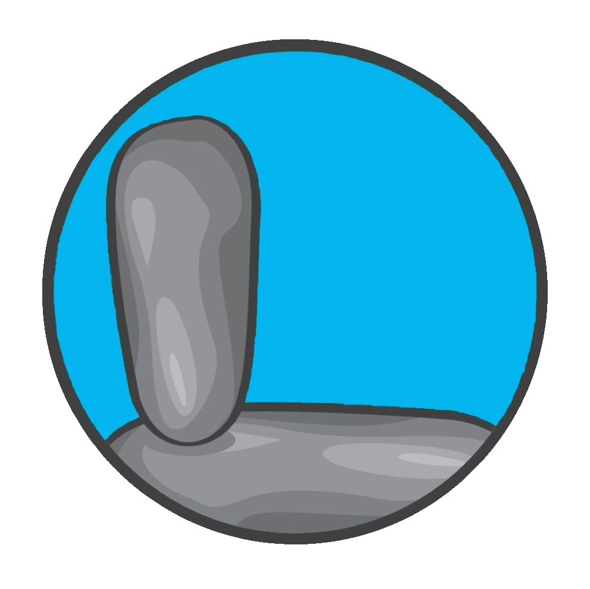

<!--
  Generated template for the FocusPage page.

  See http://ionicframework.com/docs/components/#navigation for more info on
  Ionic pages and navigation.
-->
<ion-header  class="navbar">

  <ion-navbar color="light">
    <div class="header">
      <div class="img-container">
                
      </div>
      <div class="title">
        Focus
      </div>
    </div>
    <ion-buttons end>
        <button ion-button icon-only (click)='onHelp()'>
            <ion-icon name="help-buoy"></ion-icon>
        </button>
        <button ion-button icon-only>
            <ion-icon name="information"></ion-icon>
        </button>
        <button ion-button icon-only>
            <ion-icon name="add"></ion-icon>
        </button>
    </ion-buttons>
</ion-navbar>
  
</ion-header>

<ion-content padding class="card-background-page">
    <ion-card (click)="meditationSelected()">
      
      <div class="card-title">Anxiety</div>
      <div class="card-subtitle">10 modules</div>
    </ion-card>
    <ion-card (click)="meditationSelected()">
      
      <div class="card-title">Loneliness</div>
      <div class="card-subtitle">5 modules</div>
    </ion-card>
      

</ion-content>
